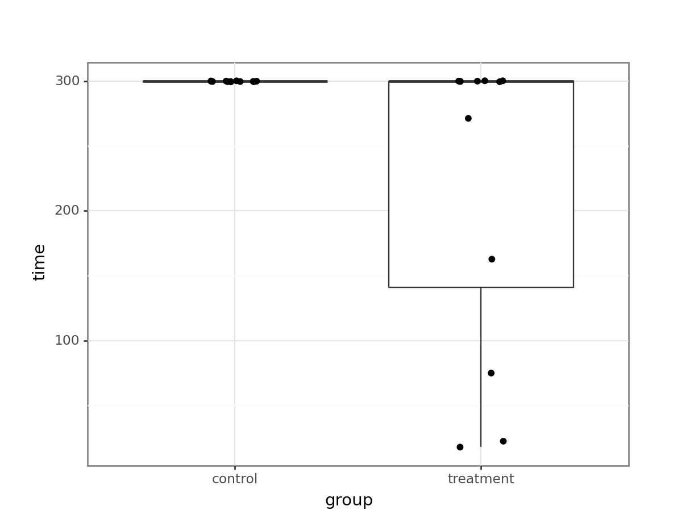

# A collection of R packages designed for data science
library(tidyverse)4 Single permutation tests
Learning outcomes
Questions
- How do we analyse data without distributional assumptions?
Objectives
Perform Monte Carlo permutation tests for:
- Single predictors
4.1 Libraries and functions
Click to expand
4.1.1 Libraries
4.1.2 Functions
# Takes a random sample with or without replacement (default)
base::sample()4.1.3 Libraries
# A Python data analysis and manipulation tool
import pandas as pd
# A Python package for scientific computing
import numpy as np
# Python equivalent of `ggplot2`
from plotnine import *
# Python module providing statistical functionality
from scipy import stats4.1.4 Functions
# Calculates the difference between two elements
pandas.DataFrame.diff()
# Randomly permutes a sequence
numpy.random.permutation()
# Calculates the interquartile range
scipy.stats.iqr()4.2 Purpose and aim
If we wish to test for a difference between two groups in the case where the assumptions of a two-sample t-test just aren’t met, then a two-sample permutation test procedure is appropriate. It is also appropriate even if the assumptions of a t-test are met, but in that case, it would be easier to just do the t-test.
One of the additional benefits of permutation test is that we aren’t just restricted to testing hypotheses about the means of the two groups. We can test hypotheses about absolutely anything we want! So, we could see if the ranges of the two groups differed significantly etc.
4.3 Data and hypotheses
Let’s consider an experimental data set where we have measured the weights of two groups of 12 female mice (so 24 mice in total). One group of mice was given a perfectly normal diet (control) and the other group of mice was given a high fat diet for several months (highfat).
We want to test whether there is any difference in the mean weight of the two groups. We still need to specify the hypotheses:
\(H_0\): there is no difference in the means of the two groups
\(H_1\): there is a difference in the means of the two groups Let’s read in the data and look at it:
mice_weight <- read_csv("data/mice_weight.csv")ggplot(mice_weight, aes(x = diet, y = weight)) +
geom_boxplot() +
geom_jitter(width = 0.1)mice_weight_py = pd.read_csv("data/mice_weight.csv")(ggplot(mice_weight_py,
aes(x = "diet",
y = "weight")) +
geom_boxplot() +
geom_jitter(width = 0.1))Looking at the data, it appears that there might be a difference between the mean weight of the two groups. The weights of the mice on the highfat diet appears somewhat higher than on control, although there is quite some overlap between the data.
The medians (the horizontal lines in the boxes) are shifted - as are the boxes. So, the first thing we probably want to do is to calculate the exact difference in means:
mice_weight %>%
group_by(diet) %>%
summarise(mean_weight = mean(weight)) %>%
ungroup()# A tibble: 2 × 2
diet mean_weight
<chr> <dbl>
1 control 23.8
2 highfat 26.8We’ll want to use this difference later on, so we store it in a variable:
obs_diff_weight <- mice_weight %>%
group_by(diet) %>%
summarise(mean_weight = mean(weight)) %>%
ungroup() %>%
# calculate the difference in weight
# (there are many ways that you can do this)
pull(mean_weight) %>%
diff()
obs_diff_weight[1] 3.020833obs_diff_weight = (mice_weight_py
.groupby('diet')['weight']
.mean()
.diff()
.iloc[-1])This gives us an observed difference of:
obs_diff_weight3.020833333333332What we want to know is: is this difference unusual/big/statistically significant? Specifically, how likely would it be to get a difference this big if there were no difference between the two groups?
4.4 Permutation theory
The key idea behind permutation techniques is that if the null hypothesis is true, and there is no difference between the two groups then if I were to switch some of the mice from one group to the next then this wouldn’t change the difference between the groups too much. If on the other hand there actually is a difference between the groups (with one group having much higher weights than the other), then if I were to switch some mice between the groups then this should average out the two groups leading to a smaller difference in group means.
So, what we do is we shuffle the mice weights around lots and lots of times, calculating the difference between the group means each time. Once we have done this shuffling hundreds or thousands of times, we will have loads of possible values for the difference in the two group means. At this stage we can look at our actual difference (the one we calculated from our original data) and see how this compares to all of the simulated differences.
We can calculate how many of the simulated differences are bigger than our real difference and this proportion is exactly the p-value that we’re looking for!
4.5 Permutation example
Let look at how to carry this out in practice.
We need to approach this a bit logically, since we are going to iterate a process multiple times. We can break down the steps into the following:
- Define the number of permutations.
- Permute (randomly assign) the
dietlabels, without replacing. - Calculate the new difference in means between the groups.
- Store the difference and repeat.
4.5.1 Permute the data
We will be randomly shuffling our data around. So we set the seed, to aid reproducibility for the example.
seed <- 2602set.seed(seed)
# Set the number of permutations
reps <- 1000
# Create a place to store the values
permuted_stats <- tibble(permuted_diff = numeric(reps))
# Loop through process
for(i in 1:reps){
# Get the data
permuted_data <- mice_weight
# Permute (reshuffle) the group labels
permuted_data$diet <- sample(permuted_data$diet)
# Calculate the new group differences
permuted_diff <- permuted_data %>%
group_by(diet) %>%
summarise(mean_weight = mean(weight)) %>%
ungroup() %>%
pull(mean_weight) %>%
diff()
# Store the calculated difference
permuted_stats$permuted_diff[i] <- permuted_diff
}seed = 2602np.random.seed(seed)
# Set the number of permutations
reps = 1000
# Create a place to store the values
permuted_stats = pd.DataFrame({'permuted_diff': [0] * reps})
# Loop through process
for i in range(reps):
# Get the data
permuted_data_py = mice_weight_py
# Permute the group labels
permuted_data_py['diet'] = (np
.random
.permutation(permuted_data_py['diet']
.values))
# Calculate the new group difference
permuted_diff = (permuted_data_py
.groupby('diet')['weight']
.mean()
.diff()
.iloc[-1])
# Store the calculated difference
permuted_stats['permuted_diff'][i] = permuted_diff4.5.2 Comparing permuted values
We can visualise the difference as a histogram:
ggplot(permuted_stats, aes(permuted_diff)) +
geom_histogram() +
geom_vline(xintercept = obs_diff_weight, colour = "blue", linewidth = 1)`stat_bin()` using `bins = 30`. Pick better value with `binwidth`.(ggplot(permuted_stats,
aes(x = "permuted_diff")) +
geom_histogram() +
geom_vline(xintercept = obs_diff_weight, colour = "blue", size = 1))The histogram is centred around zero, as we would expect: under the null hypothesis in this analysis there shouldn’t be any difference between the groups.
The blue vertical line shows us the value of our actual observed difference.
We can see that our observed difference is unlikely (because it’s out in the tails of the distribution rather than in the middle), but we want to be able to say exactly how unlikely. To do that we need to calculate the proportion of simulated differences that were bigger than our observed value. And, because we’re interested in a two-tailed test, we also need to include any simulated values that were less than -3.02 (so the lower tail).
4.5.3 Calculating statistical significance
In essence, we are calculating the statistical significance by comparing our original data against the null hypothesis.
We do this in the following steps:
- Count the number of occurrences where the permuted difference (
permuted_diff) is larger than the observed weight difference (obs_diff_weight). - Divide this by the number of times we permuted the data (
reps)
permuted_stats %>%
filter(abs(permuted_diff) > obs_diff_weight) %>%
nrow()[1] 51If we divide this number by 1000 (the number of permutations), we get a value of 0.051.
In this case we have fixed the random number generator. You might not have done that and normally you probably don’t want to either. In that case you will get a slightly different value every time you run this. In order to get more precision on this p-value we will need to run more than 1,000 replicates.
A good rule of thumb is that, for 1,000 replicates, a permutation test will return a p-value to within 1% of the actual value (so in this case the p-value is probably between 0.041 and 0.061). If we go to 10,000 replicates, then the error in the estimated p-value reduces to about 0.1%.
larger_diff = len(permuted_stats[permuted_stats['permuted_diff'] \
.abs() > obs_diff_weight])
larger_diff50If we divide this number by 1000 (the number of permutations), we get a value of 0.05.
In this case we have fixed the random number generator. You might not have done that and normally you probably don’t want to either. In that case you will get a slightly different value every time you run this. In order to get more precision on this p-value we will need to run more than 1,000 replicates.
A good rule of thumb is that, for 1,000 replicates, a permutation test will return a p-value to within 1% of the actual value (so in this case the p-value is probably between 0.04 and 0.06). If we go to 10,000 replicates, then the error in the estimated p-value reduces to about 0.1%.
4.6 Exercises
4.6.1 Permuting IQR
Exercise
Level:
For this exercise we’ll again use the mice_weight data from data/mice_weight.csv.
One of the advantages of using permutation tests is that we’re not limited to just exploring the mean or median from our data. To practice this, we’ll explore differences in the interquartile range (IQR) between the control and highfat groups.
Question: is there a significant difference in the IQR of weight between control and highfat mice?
Answer
To address the question, we do the following:
- Load and visualise the data
- Calculate the observed IQR for both groups
- Permute the data
- Calculate how often the permuted IQR is larger than the observed
Load and visualise the data
mice_weight <- read_csv("data/mice_weight.csv")We have visualised the data previously.
Observed statistic
To calculate the interquartile range, we use the IQR() function. The IQR for each group is as follows:
mice_weight %>%
group_by(diet) %>%
summarise(iqr_weight = IQR(weight))# A tibble: 2 × 2
diet iqr_weight
<chr> <dbl>
1 control 5.04
2 highfat 5.49The observed difference in IQR is:
obs_diff_iqr <- mice_weight %>%
group_by(diet) %>%
summarise(iqr_weight = IQR(weight)) %>%
pull(iqr_weight) %>%
diff()
obs_diff_iqr[1] 0.45Permute the data
seed <- 2602set.seed(seed)
# Set the number of permutations
reps <- 1000
# Create a place to store the values
permuted_stats <- tibble(permuted_diff = numeric(reps))
# Loop through process
for(i in 1:reps){
# Get the data
permuted_data <- mice_weight
# Permute (reshuffle) the group labels
permuted_data$diet <- sample(permuted_data$diet)
# Calculate the new group differences
permuted_diff <- permuted_data %>%
group_by(diet) %>%
summarise(iqr_weight = IQR(weight)) %>%
ungroup() %>%
pull(iqr_weight) %>%
diff()
# Store the calculated difference
permuted_stats$permuted_diff[i] <- permuted_diff
}We visualise these as follows:
ggplot(permuted_stats, aes(permuted_diff)) +
geom_histogram() +
geom_vline(xintercept = obs_diff_iqr, colour = "blue", linewidth = 1)`stat_bin()` using `bins = 30`. Pick better value with `binwidth`.Calculate statistical significance
permuted_stats %>%
filter(abs(permuted_diff) > obs_diff_iqr) %>%
nrow()[1] 803Dividing this by the number of permutations (1000) gives us a p-value of 0.803.
Load and visualise the data
mice_weight_py = pd.read_csv("data/mice_weight.csv")We have visualised the data previously.
Observed statistic
We use the iqr() function from scipy.stats:
from scipy.stats import iqr
obs_iqr = (mice_weight_py
.groupby('diet')['weight']
.agg(iqr))
obs_iqrdiet
control 5.0375
highfat 5.4875
Name: weight, dtype: float64This gives us an observed difference of:
obs_diff_iqr = obs_iqr.diff().iloc[-1]
obs_diff_iqr0.45000000000000284Permute the data
seed = 2602np.random.seed(seed)
# Set the number of permutations
reps = 1000
# Create a place to store the values
permuted_stats = pd.DataFrame({'permuted_diff': [0] * reps})
# Loop through process
for i in range(reps):
# Get the data
permuted_data_py = mice_weight_py
# Permute the group labels
permuted_data_py['diet'] = (np
.random
.permutation(permuted_data_py['diet']
.values))
# Calculate the new group difference
permuted_iqr = (permuted_data_py
.groupby('diet')['weight']
.agg(iqr))
permuted_diff = permuted_iqr.diff().iloc[-1]
# Store the calculated difference
permuted_stats['permuted_diff'][i] = permuted_diff(ggplot(permuted_stats,
aes(x = "permuted_diff")) +
geom_histogram() +
geom_vline(xintercept = obs_diff_iqr, colour = "blue", size = 1))Calculate the statistical significance
Here we need to find all the values where the permuted IQR is smaller than -0.45 or larger than 0.45:
larger_diff = len(permuted_stats[permuted_stats['permuted_diff'] \
.abs() > obs_diff_iqr])
larger_diff808If we divide this number by 1000 (the number of permutations), we get a value of 0.808.
This analysis shows that there is no statistically significant difference between the interquartile range of weight for the two different diets.
Differences in IQR in R vs Python: would you like to know more?
The eagle-eyed amongst you might have noticed that the values calculated between R and Python are slightly different. Part of this is caused by the difference in how the random number generators work between the two languages (which we’re not going to go into) and part of it by the difference in how the IQR is calculated.
In R, the IQR() function uses a default method to calculate the quartiles (“type-7”), which excludes the smallest and largest 25% of the data when calculating the quartiles.
In Python, the scipy.stats.iqr() function calculates the interquartile range simply as the difference between the 75th and 25th percentiles.
Hence, some slight differences. If you’ve really got your mind set on making them more equivalent you can specify an extra argument in Python: rng. You can set it to include the middle 50% of the data: iqr(data, rng = (25, 75)).
4.6.2 Rats - strange metrics
Exercise
Level:
For this exercise we’ll be using the data from data/rats_wheel.csv.
This data set contains information on the length of time that 24 rats were able to stay balanced on a rotating wheel. Half of the rats were assigned to the control group and the other half were given a dose of a centrally acting muscle relaxant. The animals were placed on a rotating cylinder and the length of time that each rat remained on the cylinder was measured, up to a maximum of 300 seconds.
The data set contains two variables: time and group.
Whilst you could explore differences in means between these two groups, in this case an alternative statistic presents itself. When you look at the data you should notice that for the control group that all 12 rats manage to stay on the roller for the maximum 300 seconds, whereas in the treated group 5 out of the 12 fall off earlier.
For this exercise, instead of calculating the mean length of time for each group, you should calculate the proportion of rats that make it to 300s in each group and find the difference. This will be your statistic.
Answer the following questions:
- Is the proportion of rats that remain on the wheel the entire duration of the experiment is the same between each group? Use a permutation test to explore this.
- Why would the difference in medians be a particularly useless statistic in this case?
- Consider the number of repetitions. What is a sensible number to apply and why?
Answer
Load and visualise the data.
rats_wheel <- read_csv("data/rats_wheel.csv")Rows: 24 Columns: 2
── Column specification ────────────────────────────────────────────────────────
Delimiter: ","
chr (1): group
dbl (1): time
ℹ Use `spec()` to retrieve the full column specification for this data.
ℹ Specify the column types or set `show_col_types = FALSE` to quiet this message.ggplot(rats_wheel, aes(x = group, y = time)) +
geom_boxplot() +
geom_jitter(width = 0.1)rats_wheel_py = pd.read_csv("data/rats_wheel.csv")(ggplot(rats_wheel_py,
aes(x = "group",
y = "time")) +
geom_boxplot() +
geom_jitter(width = 0.1))
We can immediately see what the issue is with these data. All of the control subjects stayed on the wheel for 300s. If we would check the diagnostic plots for these data then it would not look very promising. For example, I am confident that the equality of variance assumption will not hold here!
Proportion of rats to full time
So, let’s do what we’re asked to do and calculate the proportion of rats that make it to 300s, for each group.
There are many ways of doing this, but here is one:
prop_rats <- rats_wheel %>%
group_by(group, time) %>%
count() %>%
group_by(group) %>%
mutate(group_n = sum(n),
prop_rats = n / group_n) %>%
filter(time == 300)
prop_rats# A tibble: 2 × 5
# Groups: group [2]
group time n group_n prop_rats
<chr> <dbl> <int> <int> <dbl>
1 control 300 12 12 1
2 treatment 300 7 12 0.583Next, we calculate the difference in the proportion of rats that make it to 300s, between the two groups.
obs_diff_prop <- prop_rats %>%
pull(prop_rats) %>%
diff()
obs_diff_prop[1] -0.4166667There are many ways of doing this, but here’s one:
# Calculate the total number of observations in each group
rats_wheel_py['group_n'] = rats_wheel_py.groupby('group')['group'].transform('size')
# Count the number of occurrences for each unique time point
# and keep the total group count
prop_rats_py = rats_wheel_py.groupby(['group', 'group_n', 'time']).size().reset_index(name = 'n')
# Calculate the proportion of rats that make it to each time point
prop_rats_py['prop_rats'] = prop_rats_py['n'] / prop_rats_py['group_n']
# Filter for the 300s time point
prop_rats_py = prop_rats_py[prop_rats_py['time'] == 300]
prop_rats_py group group_n time n prop_rats
0 control 12 300 12 1.000000
6 treatment 12 300 7 0.583333Next, we calculate the difference in the proportion of rats that make it to 300s, between the two groups.
obs_diff_prop = prop_rats_py['prop_rats'].diff().iloc[-1]
obs_diff_prop-0.41666666666666663Permute the data
Now we’ve got that out of the way, we can permute our data. We’re reshuffling the group labels randomly, then recalculating the permuted proportional difference at time point 300s.
seed <- 2602set.seed(seed)
# Set the number of permutations
reps <- 1000
# Create a place to store the values
permuted_stats <- tibble(permuted_diff = numeric(reps))
# Loop through process
for(i in 1:reps){
# Get the data
permuted_data <- rats_wheel
# Permute (reshuffle) the group labels
permuted_data$group <- sample(permuted_data$group)
# Calculate the new proportional differences
permuted_diff <- permuted_data %>%
group_by(group, time) %>%
count() %>%
group_by(group) %>%
mutate(group_n = sum(n),
prop_rats = n / group_n) %>%
filter(time == 300) %>%
pull(prop_rats) %>%
diff()
# Store the calculated difference
permuted_stats$permuted_diff[i] <- permuted_diff
}seed = 2602np.random.seed(seed)
# Set the number of permutations
reps = 1000
# Create a place to store the values
permuted_stats = pd.DataFrame({'permuted_diff': [0] * reps})
# Loop through process
for i in range(reps):
# Get the data
permuted_data_py = rats_wheel_py
# Permute the group labels
permuted_data_py['group'] = (np
.random
.permutation(permuted_data_py['group']
.values))
# Calculate the new group difference
# Calculate the total number of observations in each group
permuted_data_py['group_n'] = \
permuted_data_py.groupby('group')['group'].transform('size')
# Count the number of occurrences for each unique time point
# and keep the total group count
prop_rats_py = \
permuted_data_py.groupby(['group', 'group_n', 'time']) \
.size().reset_index(name = 'n')
# Calculate the proportion of rats that make it to each time point
prop_rats_py['prop_rats'] = \
prop_rats_py['n'] / prop_rats_py['group_n']
# Filter for the 300s time point
prop_rats_py = prop_rats_py[prop_rats_py['time'] == 300]
permuted_diff = prop_rats_py['prop_rats'].diff().iloc[-1]
# Store the calculated difference
permuted_stats['permuted_diff'][i] = permuted_diffCompare against observed difference
We can now compare the permuted values. There are a limited number of unique permuted differences (6, to be precise), so we’re limited the number of bins to this.
ggplot(permuted_stats, aes(permuted_diff)) +
geom_histogram(bins = 6) +
geom_vline(xintercept = obs_diff_prop, colour = "blue", linewidth = 1) +
geom_vline(xintercept = abs(obs_diff_prop), colour = "blue", linewidth = 1)(ggplot(permuted_stats,
aes(x = "permuted_diff")) +
geom_histogram(bins = 6) +
geom_vline(xintercept = obs_diff_prop, colour = "blue", size = 1) +
geom_vline(xintercept = abs(obs_diff_prop), colour = "blue", size = 1))Statistical evaluation
We can now answer the question if the proportion of rats that make it to full time is different between the groups. We do this by comparing the number of occurrences in the resampled data against the original data. How many times is the difference in proportion larger than the observed difference in proportion? Remember, we are doing a two-tailed test, so we need to get the values on either side of the observed proportion.
In this case the observed difference in proportion between control and treatment is negative, which we need to take into account.
permuted_stats %>%
filter(permuted_diff < obs_diff_prop |
permuted_diff > abs(obs_diff_prop)) %>%
nrow()[1] 0len(permuted_stats[(permuted_stats['permuted_diff'] < obs_diff_prop) | (permuted_stats['permuted_diff'] > abs(obs_diff_prop))])0We find that none of the permuted differences in proportion between control and treatment that make it to 300s is outside the one we observed. This means that it is extremely unlikely that we’d find these data, if there is indeed no difference between the two groups.
Using the median or not
To answer the second question: the median is a particularly useless statistic to use with these data because there is no variation in the measurements for the control group. All of the values are 300s, meaning you can’t find a value where 50% of the data is on one side of it and 50% of the data is on the other!
Number of repetitions
This then brings us to the third question: the number of repetitions. In the worked answer we’ve used 1,000 repetitions. However, we have two groups with only 12 observations. This means we’re limited in the number of unique combinations we can find.
To be more exact, we’re limited to:
\(C(n, k) = \frac{n!}{k!(n-k)!}\)
where
\(n!\) (n factorial) is the product of all positive integers up to \(n\). \(k!\) (k factorial) is the product of all positive integers up to \(k\).
For our data set this comes down to:
\(C(2 \times 12, 2) = \frac{(2 \times 12)!}{2!(2 \times 12 - 2)!}\)
\(C(24, 2) = \frac{24!}{2! \times 22!}\)
We can calculate this as follows:
n <- 24
k <- 2
# Calculate the number of unique combinations
factorial(n) / (factorial(k) * factorial(n - k))[1] 276import math
n = 24
k = 2
math.factorial(n) // (math.factorial(k) * math.factorial(n - k))276This means we can create 276 unique combinations.
If we run the analysis again using this number, then our output looks like:
This makes a quantitative difference: when we look at the frequency (count) of the permuted differences in proportion, it’s clear that the numbers are lower than when we permuted the data 1,000 times. This is because when we permuted more times than there were unique combinations, the same answer was calculated multiple times.
4.7 Summary
Key points
- We can use resampled data to draw conclusions around how likely it is our original data would occur, given the null hypothesis.
- We can calculate statistical significance using this approach.